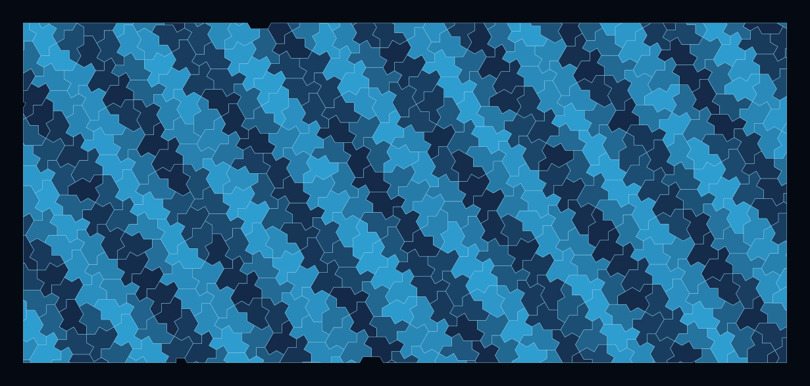

Waves, acoustics, and photonics
Non-repeating tiled surfaces for scattering, diffraction, and waveguide studies — now with experimental results.
From conjecture to measurement
This is the monotile application area with real laboratory results. Moritake, Takiguchi, Aihara, and Notomi fabricated a photonic lattice arranged as a Spectre monotile tiling and measured its diffraction: the pattern shows chiral diffraction — handedness-dependent optical response arising purely from the aperiodic chiral geometry, with no chiral material required.[19] The theoretical foundation is the quasicrystalline diffraction structure of monotile tilings.[6]

Condensed-matter theory adds depth: the electronic and vibrational properties of the Hat lattice differ measurably from periodic and random baselines,[20] Ising spins on the Hat tiling order differently,[21] and dimer statistics on the Spectre tiling reveal distinctive combinatorial structure.[22] Together these establish that monotile geometry changes wave and lattice physics — the open question is where that change is useful. Experimental polariton realizations on monotile lattices now show Bragg peaks and long-range coherence,[40] with theory predicting critical states and anomalous transport in related optical setups.[41] Tile-shape geometry can tune topological phases and the quantum geometric tensor in model systems.[39]
Candidate applications
- Acoustic diffusers and panels: aperiodic surfaces scatter without the flutter echoes of periodic ones
- Photonic and phononic structures with engineered chiral response
- Antenna and metasurface layouts that suppress grating lobes[38]
- Simulation-ready polygon exports for comparing periodic, random, and aperiodic boundaries in FDTD/FEM
See also
Materials science and fluids, Signal processing and imaging
Categories: Research frontiers